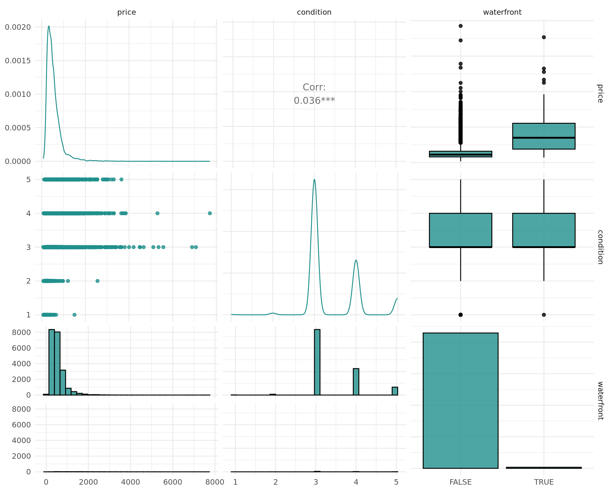
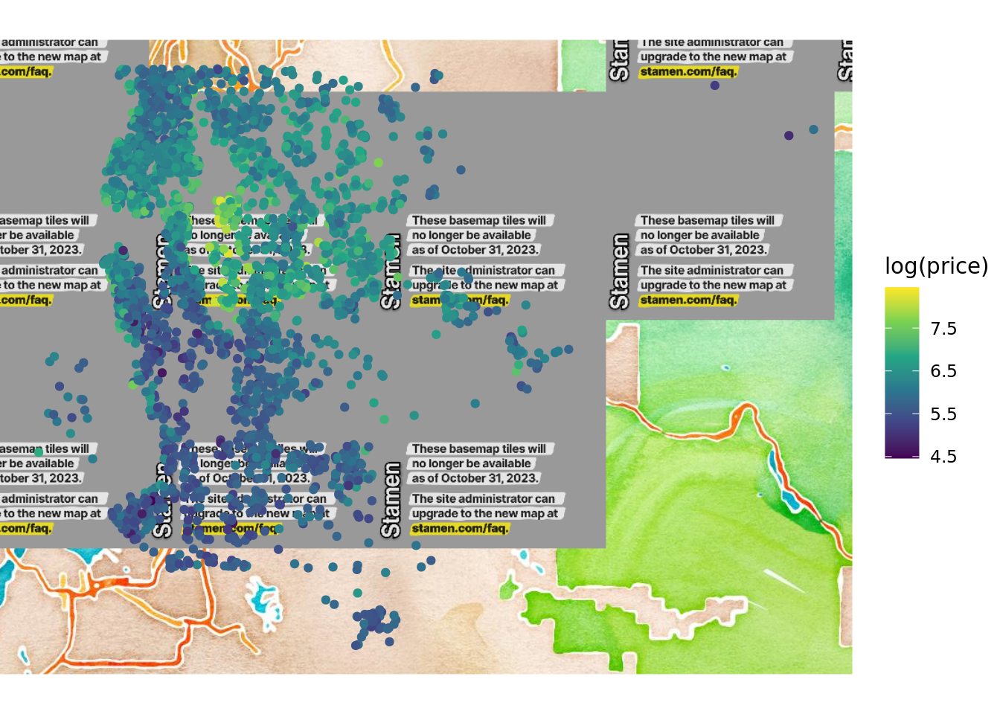
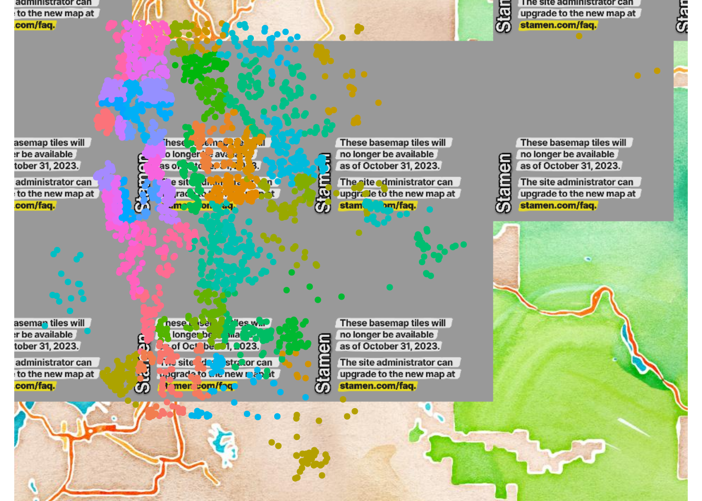

library(mlr3verse)Loading required package: mlr3The website features runtime benchmarks of the paradox package now.
Apply multiple preprocessing steps, fit a model and visualize the results.
Florian Pfisterer
January 30, 2020
The use-case illustrated below touches on the following concepts:
The relevant sections in the mlr3book are linked to for the reader’s convenience.
This use case shows how to model housing price data in King County. Following features are illustrated:
We load the mlr3verse package which pulls in the most important packages for this example.
We initialize the random number generator with a fixed seed for reproducibility, and decrease the verbosity of the logger to keep the output clearly represented.
We use the kc_housing dataset contained in the package mlr3data in order to provide a use-case for the application of mlr3 on real-world data.
In order to get a quick impression of our data, we perform some initial Exploratory Data Analysis. This helps us to get a first impression of our data and might help us arrive at additional features that can help with the prediction of the house prices.
We can get a quick overview using R’s summary function:
date price bedrooms bathrooms sqft_living sqft_lot
Min. :2014-05-02 00:00:00.0 Min. : 75000 Min. : 0.000 Min. :0.000 Min. : 290 Min. : 520
1st Qu.:2014-07-22 00:00:00.0 1st Qu.: 321950 1st Qu.: 3.000 1st Qu.:1.750 1st Qu.: 1427 1st Qu.: 5040
Median :2014-10-16 00:00:00.0 Median : 450000 Median : 3.000 Median :2.250 Median : 1910 Median : 7618
Mean :2014-10-29 03:58:09.9 Mean : 540088 Mean : 3.371 Mean :2.115 Mean : 2080 Mean : 15107
3rd Qu.:2015-02-17 00:00:00.0 3rd Qu.: 645000 3rd Qu.: 4.000 3rd Qu.:2.500 3rd Qu.: 2550 3rd Qu.: 10688
Max. :2015-05-27 00:00:00.0 Max. :7700000 Max. :33.000 Max. :8.000 Max. :13540 Max. :1651359
floors waterfront view condition grade sqft_above sqft_basement
Min. :1.000 Mode :logical Min. :0.0000 Min. :1.000 Min. : 1.000 Min. : 290 Min. : 10.0
1st Qu.:1.000 FALSE:21450 1st Qu.:0.0000 1st Qu.:3.000 1st Qu.: 7.000 1st Qu.:1190 1st Qu.: 450.0
Median :1.500 TRUE :163 Median :0.0000 Median :3.000 Median : 7.000 Median :1560 Median : 700.0
Mean :1.494 Mean :0.2343 Mean :3.409 Mean : 7.657 Mean :1788 Mean : 742.4
3rd Qu.:2.000 3rd Qu.:0.0000 3rd Qu.:4.000 3rd Qu.: 8.000 3rd Qu.:2210 3rd Qu.: 980.0
Max. :3.500 Max. :4.0000 Max. :5.000 Max. :13.000 Max. :9410 Max. :4820.0
NA's :13126
yr_built yr_renovated zipcode lat long sqft_living15 sqft_lot15
Min. :1900 Min. :1934 Min. :98001 Min. :47.16 Min. :-122.5 Min. : 399 Min. : 651
1st Qu.:1951 1st Qu.:1987 1st Qu.:98033 1st Qu.:47.47 1st Qu.:-122.3 1st Qu.:1490 1st Qu.: 5100
Median :1975 Median :2000 Median :98065 Median :47.57 Median :-122.2 Median :1840 Median : 7620
Mean :1971 Mean :1996 Mean :98078 Mean :47.56 Mean :-122.2 Mean :1987 Mean : 12768
3rd Qu.:1997 3rd Qu.:2007 3rd Qu.:98118 3rd Qu.:47.68 3rd Qu.:-122.1 3rd Qu.:2360 3rd Qu.: 10083
Max. :2015 Max. :2015 Max. :98199 Max. :47.78 Max. :-121.3 Max. :6210 Max. :871200
NA's :20699 [1] 21613 20Our dataset has 21613 observations and 20 columns. The variable we want to predict is price. In addition to the price column, we have several other columns:
id: A unique identifier for every house.
date: A date column, indicating when the house was sold. This column is currently not encoded as a date and requires some preprocessing.
zipcode: A column indicating the ZIP code. This is a categorical variable with many factor levels.
long, lat The longitude and latitude of the house
... several other numeric columns providing information about the house, such as number of rooms, square feet etc.
Before we continue with the analysis, we preprocess some features so that they are stored in the correct format.
First we convert the date column to numeric. To do so, we convert the date to the POSIXct date/time class with the anytime package. Next, use difftime() to convert to days since the first day recorded in the data set:
Afterwards, we convert the zip code to a factor:
And add a new column renovated indicating whether a house was renovated at some point.
We drop the id column which provides no information about the house prices:
Additionally, we convert the price from Dollar to units of 1000 Dollar to improve readability.
Additionally, for now we simply drop the columns that have missing values, as some of our learners can not deal with them. A better option to deal with missing values would be imputation, i.e. replacing missing values with valid ones. We will deal with this in a separate article.
We can now plot the density of the price to get a first impression on its distribution.
We can see that the prices for most houses lie between 75.000 and 1.5 million dollars. There are few extreme values of up to 7.7 million dollars.
Feature engineering often allows us to incorporate additional knowledge about the data and underlying processes. This can often greatly enhance predictive performance. A simple example: A house which has yr_renovated == 0 means that is has not been renovated yet. Additionally, we want to drop features which should not have any influence (id column).
After those initial manipulations, we load all required packages and create a TaskRegr containing our data.
We can inspect associations between variables using mlr3viz’s autoplot function in order to get some good first impressions for our data. Note, that this does in no way prevent us from using other powerful plot functions of our choice on the original data.
The outcome we want to predict is the price variable. The autoplot function provides a good first glimpse on our data. As the resulting object is a ggplot2 object, we can use faceting and other functions from ggplot2 in order to enhance plots.
We can observe that renovated flats seem to achieve higher sales values, and this might thus be a relevant feature.
Additionally, we can for example look at the condition of the house. Again, we clearly can see that the price rises with increasing condition.
In addition to the association with the target variable, the association between the features can also lead to interesting insights. We investigate using variables associated with the quality and size of the house. Note that we use $clone() and $select() to clone the task and select only a subset of the features for the autoplot function, as autoplot per default uses all features. The task is cloned before we select features in order to keep the original task intact.
Registered S3 method overwritten by 'GGally':
method from
+.gg ggplot2`stat_bin()` using `bins = 30`. Pick better value with `binwidth`.
`stat_bin()` using `bins = 30`. Pick better value with `binwidth`.
In mlr3, we do not create train and test data sets, but instead keep only a vector of train and test indices.
We can do the same for our task:
Decision trees cannot only be used as a powerful tool for predictive models but also for exploratory data analysis. In order to fit a decision tree, we first get the regr.rpart learner from the mlr_learners dictionary by using the sugar function lrn.
For now, we leave out the zipcode variable, as we also have the latitude and longitude of each house. Again, we use $clone(), so we do not change the original task.
The learned tree relies on several variables in order to distinguish between cheaper and pricier houses. The features we split along are grade, sqft_living, but also some features related to the area (longitude and latitude). We can visualize the price across different regions in order to get more info:

Warning: The `<scale>` argument of `guides()` cannot be `FALSE`. Use "none" instead as of ggplot2 3.3.4.
We can see that the price is clearly associated with the zipcode when comparing then two plots. As a result, we might want to indeed use the zipcode column in our future endeavors.
After getting an initial idea for our data, we might want to construct a first baseline, in order to see what a simple model already can achieve.
We use resample() with 3-fold cross-validation on our training data in order to get a reliable estimate of the algorithm’s performance on future data. Before we start with defining and training learners, we create a Resampling in order to make sure that we always compare on exactly the same data.
For the cross-validation we only use the training data by cloning the task and selecting only observations from the training set.
task_id learner_id resampling_id iteration regr.rmse
1: kc_housing regr.rpart cv 1 205.7541
2: kc_housing regr.rpart cv 2 205.6597
3: kc_housing regr.rpart cv 3 213.3846
Hidden columns: task, learner, resampling, prediction[1] "RMSE of the simple rpart: 208.3"We might be able to improve upon the RMSE using more powerful learners. We first load the mlr3learners package, which contains the ranger learner (a package which implements the “Random Forest” algorithm).
task_id learner_id resampling_id iteration regr.rmse
1: kc_housing regr.ranger cv 1 142.2424
2: kc_housing regr.ranger cv 2 161.6867
3: kc_housing regr.ranger cv 3 138.2549
Hidden columns: task, learner, resampling, prediction[1] "RMSE of the simple ranger: 147.75"Often tuning RandomForest methods does not increase predictive performances substantially. If time permits, it can nonetheless lead to improvements and should thus be performed. In this case, we resort to tune a different kind of model: Gradient Boosted Decision Trees from the package xgboost.
AutoTunerTuning can often further improve the performance. In this case, we tune the xgboost learner in order to see whether this can improve performance. For the AutoTuner we have to specify a Termination Criterion (how long the tuning should run) a Tuner (which tuning method to use) and a ParamSet (which space we might want to search through). For now, we do not use the zipcode column, as xgboost cannot naturally deal with categorical features. The AutoTuner automatically performs nested cross-validation.
lrn_xgb = lrn("regr.xgboost")
# Define the search space
search_space = ps(
eta = p_dbl(lower = 0.2, upper = .4),
min_child_weight = p_dbl(lower = 1, upper = 20),
subsample = p_dbl(lower = .7, upper = .8),
colsample_bytree = p_dbl(lower = .9, upper = 1),
colsample_bylevel = p_dbl(lower = .5, upper = .7),
nrounds = p_int(lower = 1L, upper = 25))
at = auto_tuner(
tuner = tnr("random_search", batch_size = 40),
learner = lrn_xgb,
resampling = rsmp("holdout"),
measure = msr("regr.rmse"),
search_space = search_space,
term_evals = 10) task_id learner_id resampling_id iteration regr.rmse
1: kc_housing regr.xgboost.tuned cv 1 147.0554
2: kc_housing regr.xgboost.tuned cv 2 136.4282
3: kc_housing regr.xgboost.tuned cv 3 132.4484
Hidden columns: task, learner, resampling, prediction[1] "RMSE of the tuned xgboost: 138.78"We can obtain the resulting parameters in the respective splits by accessing the ResampleResult.
[,1] [,2] [,3]
nrounds 25 23 24
verbose 0 0 0
early_stopping_set "none" "none" "none"
eta 0.220869 0.3809271 0.2115116
min_child_weight 1.885109 7.472919 1.910491
subsample 0.7542127 0.7884631 0.7000357
colsample_bytree 0.9032271 0.9675298 0.9120812
colsample_bylevel 0.5259713 0.6817893 0.630818 NOTE: To keep runtime low, we only tune parts of the hyperparameter space of xgboost in this example. Additionally, we only allow for \(10\) random search iterations, which is usually too little for real-world applications. Nonetheless, we are able to obtain an improved performance when comparing to the ranger model.
In order to further improve our results we have several options:
Below we will investigate some of those possibilities and investigate whether this improves performance.
In order to better cluster the zip codes, we compute a new feature: med_price: It computes the median price in each zip-code. This might help our model to improve the prediction. This is equivalent to impact encoding more information:
We can equip a learner with impact encoding using mlr3pipelines. More information on mlr3pipelines can be obtained from other posts.
Again, we run resample() and compute the RMSE.
task_id learner_id resampling_id iteration regr.rmse
1: kc_housing encodeimpact.regr.ranger cv 1 119.4597
2: kc_housing encodeimpact.regr.ranger cv 2 146.3315
3: kc_housing encodeimpact.regr.ranger cv 3 125.4193
Hidden columns: task, learner, resampling, prediction[1] "RMSE of ranger with med_price: 130.91"In many cases, we might want to have a sparse model. For this purpose we can use a mlr3filters::Filter implemented in mlr3filters. This can prevent our learner from overfitting make it easier for humans to interpret models as fewer variables influence the resulting prediction.
In this example, we use PipeOpFilter (via po("filter", ...)) to add a feature-filter before training the model. For a more in-depth insight, refer to the sections on mlr3pipelines and mlr3filters in the mlr3 book: Feature Selection and Pipelines.
The resulting RMSE is slightly higher, and at the same time we only use \(12\) features.
task_id learner_id resampling_id iteration regr.rmse
1: kc_housing mrmr.regr.ranger cv 1 152.6009
2: kc_housing mrmr.regr.ranger cv 2 156.7883
3: kc_housing mrmr.regr.ranger cv 3 149.0143
Hidden columns: task, learner, resampling, prediction[1] "RMSE of ranger with filtering: 152.83"We have seen different ways to improve models with respect to our criteria by:
A combination of all the above would most likely yield an even better model. This is left as an exercise to the reader.
The best model we found in this example is the ranger model with the added med_price feature. In a final step, we now want to assess the model’s quality on the held-out data we stored in our task_test. In order to do so, and to prevent data leakage, we can only add the median price from the training data.
Now we can use the augmented task_test to predict on new data.